a Deck of Five Rings
- Crab Clan


The bonus provided by Hida Guardian is fixed upon resolution. If the number of holdings subsequently changes, the bonus is not affected.
If Hida Guardian leaves the conflict after using his ability, the lasting effect will persist regardless.


Hiruma Yojimbo cannot be declared as an attacker, but can be moved to a conflict on the attacking side by card effects.

Shrewd Yasuki can trigger if there is any holding in play, even one controlled by your opponent.


Borderlands Defender cannot be chosen to bow for For Shame! or Doji Gift Giver.
Borderlands Defender can be bowed by the Water ring effect. Ring effects are not card effects (revelant for The Mountain Does Not Fall).

Doubling modifiers apply after all +/- modifiers, regardless of the order of application of effects. So if you trigger Vengeful Berserker's ability, then give him a +X skill bonus, that bonus is doubled.
During duels, the value of the bid is added to the participating character's skill. This is a modifier, and it gets doubled.
Steadfast Witch Hunter can sacrifice herself to ready another character (the ability doesn't say choose "another" character).
Kaiu Shuichi can trigger if there is any holding in play, even one controlled by your opponent.

Hida Kisada can only cancel "Action:" abilities, not Reactions or Interrupts.
You cannot trigger the Lion stronghold on defense, or the Crab stronghold on attack, just to wear off Kisada's cancel. "A triggered ability can only be initiated if its "effect" has the potential to change the game state on its own." Effect is denoted after the dash (–) in the ability's text.
If your opponent uses an action, then Hida Kisada enters play (e.g. via Charge!), then your opponent uses another action, that last action will not be the first one during this conflict, so Kisada will not cancel it.
- 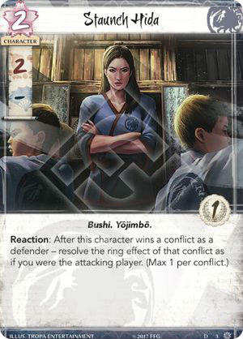
"Max 1 per conflict" means that you can only trigger one Staunch Hida per conflict, even if you control several of them.
If Staunch Hida wins a conflict at Defend the Wall, both abilities can be triggered, and you'd get to resolve the ring effect twice.

Kaiu Inventor received official errata, its ability now lasts until the end of *this* round (or specified period).
When counting a current skill total, ignore bowed characters, but take Imperial Favor into account. Crisis Breaker only counts the skill of characters participating in the conflict.
If a Magistrate makes some characters not count their skill toward the resolution of the conflict, they don't count for Crisis Breaker's ability either.
Crisis Breaker's ability does not have to resolve in full in order for you to use it. You can stand a bowed participating "Berserker", or move a standing non-participating "Berserker" to the conflict.
- 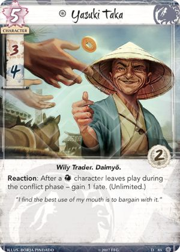
- 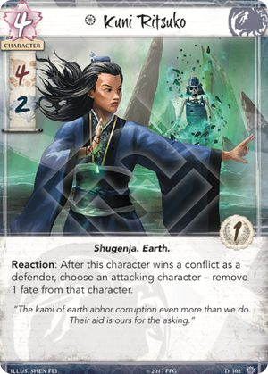
- 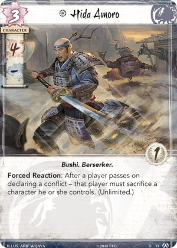

Hiruma Ambusher prevents "Action:", "Reaction:", and "Interrupt:" abilities from being triggered. Constant abilities and keywords are not affected.


Reprieve can be used to prevent a sacrifice. However, if a card ability requires a sacrifice as a cost (before the dash (–) in the ability's text), the ability will be prevented from initiating. If that ability originates from an event card, that event remains unplayed in its owner's hand. A failed initiation attempt does not count towards Limits and Maximums. The opportunity to act is passed to the opponent.

Players play cards from hand, or from provinces during the dynasty phase. Putting cards into play via card effects, or using abilities on non-Event cards, is not considered to be playing those cards.
Watch Commander triggers after the effects of an ability initiate (step 6), but before they resolve (step 7). So if a player plays Let Go or Assassination, Watch Commander will trigger before it is discarded.

Pathfinder's Blade cancels *all* effects of a province's ability, even if it has multiple targets (e.g. Shameful Display).

Pit Trap received official errata, it can only be *played* on an attacking character, it will not be discarded once attached character stops attacking.
Card effects can be used to ready attached character during the Dynasty phase.
Your opponent must select an option that can change the game state (cannot choose to give fate if he has none).

Way of the Crab can be played during an action window in any phase of the round, including the Dynasty phase (you can use an eligible "Action:" ability instead of playing a character from a province), and the Fate phase (after characters with no fate are discarded).
Sacrificing a friendly character is the cost of Way of the Crab. By the time the ability's effects can be cancelled, costs have already been paid, and a friendly character has aready been sacrificed.
If the pre-dash sacrifice is prevented (e.g. by Reprieve), the ability is prevented from initiating. The event remains unplayed in its owner's hand. A failed initiation attempt does not count towards Limits and Maximums. The opportunity to act is passed to the opponent.
Way of the Crab targets an opponent, not a character, so cards like Above Question, Shiba Yojimbo, and Finger of Jade do not protect from this event.

- 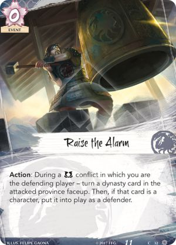
Raise the Alarm cannot be played if the card in the attacked province is already faceup. "If the pre-Then aspect of an effect does not successfully resolve in full, the post-Then aspect does not attempt to resolve."


Shiro Nishiyama only affects characters that are already participating in the conflict. Any characters that enter the conflict after the ability has resolved are not affected.

Borderlands Fortifications cannot switch places with the stronghold.

"Seeker/Keeper only" is a deckbuilding restriction. You can take control of cards that do not match your role.
If you take control of an opponent's unique attachment (e.g. Talisman of the Sun), neither player can play another copy of that attachment (because each player either owns or controls a copy in play).
If you control a unique attachment, you can attempt to take control of another copy of that attachment. Since you cannot take control of it, it will be discarded.
Iron Mine can be used to prevent a sacrifice. However, if a card ability requires a sacrifice as a cost (before the dash (–) in the ability's text), the ability will be prevented from initiating. If that ability originates from an event card, that event remains unplayed in its owner's hand. A failed initiation attempt does not count towards Limits and Maximums. The opportunity to act is passed to the opponent.


- Crane Clan


Savvy Politician triggers when it changes status from Dishonored to Ordinary, or from Ordinary to Honored ("is honored" is different from "becomes honored").


You cannot move a character to a conflict if that character cannot participate in that conflict (has a dash (–) for a skill, or a relevant constant ability, e.g. Shiba Peacemaker, Pacifism).
When counting a current skill total, ignore bowed characters, but take Imperial Favor into account.
If a Magistrate makes some characters not count their skill toward the resolution of the conflict, they don't count for Kakita Asami's ability either.

Bowed characters do not contribute their skill whenever you count skill totals, but they still have their individual skill values (for duels, Outwit/Rout, etc.)

Multiple instances of the same keyword are redundant.
- 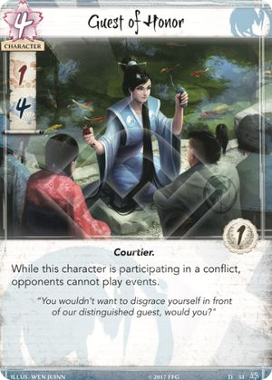
The conflict ends only after all participating characters move home bowed, so Guest of Honor prevents your opponent from playing any events that react to winning/losing the conflict, breaking a province, resolving ring effects, or claiming the contested ring.

Doji Hotaru's ability can be triggered if you claim the ring on defense. However, the attacking player gets the benefit of the ring effect (notice the wording here is different from Defend the Wall).
If the defending player wins a conflict and triggers Hotaru's ability, the attacking player "must" resolve the ring effect.

Kakita Yoshi's ability can only be used if you control the Imperial Favor. Discarding it is a cost of the ability.
When you discard the Imperial Favor, return it to the unclaimed state.
Only the fate cost of events is reduced, not any additional costs of abilities on those events.
- 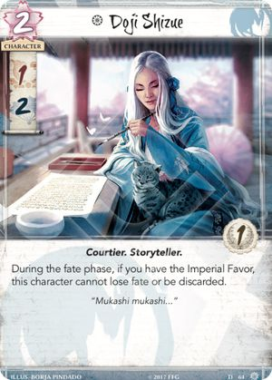
If the Crane player wins the Imperial Favor, but the Scorpion player is going to discard Fawning Diplomat during the fate phase, whether Doji Shizue is discarded or not depends on who is the first player.
- During the fate phase, the first player discards his characters with no fate first (one by one), then the second player, then 1 fate is removed from each remaining character simultaneously."Cannot be discarded" doesn't prevent Doji Shizue from being sacrificed for Way of the Crab. 'Discard' and 'sacrifice' are different game terms."
- 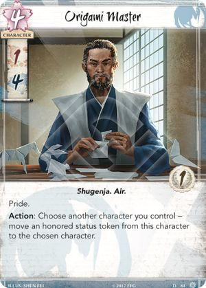
Placing, removing, or moving status tokens between characters via card abilities is not considered to "be" honoring or dishonoring them – although they do "become" honored or dishonored. So, Savvy Politician's ability would not trigger. If an honor token is moved to a dishonored character, both tokens are discarded. An honor token cannot be moved to an honored character.


When your opponent plays an event, first you get a chance to cancel its effects (with e.g. Voice of Honor), then you can trigger Shigeru's ability and make the opponent discard a card.

If the Air ring is affected by one player's Secluded Shrine, but is physically in another player's claimed pool, both players are considered to have it claimed. In this case, Fū Sui Disciple's controller may choose against which player to resolve its ability.
"Ordinary" means neither honored nor dishonored.
Steward of Law prevents characters from changing status from ordinary to dishonored; they can still go from honored to ordinary ("become dishonored" is different from "be dishonored").
- 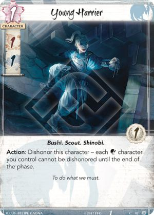
Young Harrier's ability only affects characters that are already in play. Any characters that enter play after her ability has resolved are not affected.

If an opponent's event instructs a player to *choose* a target, the character with Above Question cannot be chosen. This also applies to events that instruct another player to choose targets (e.g. Court Games)
Above Question does not prevent attached character from being sacrificed for Way of the Crab (that event doesn't instruct a player to *choose* a character, so it's non-targeting)."

Bowed characters do not contribute their skill whenever you count skill totals, but they still have their individual skill values (for duels, Outwit/Rout, etc.)
You can only choose and discard cards if you actually have enough cards.You can either give honor or discard cards, but not a combination of both.
Duelist Training can be used to challenge a bowed character to a duel.
The general "once per round" limit applies to each ability granted by a specific copy of Duelist Training to a specific character. One character can use abilities provided by multiple copies of Duelist Training (they are considered to be different abilities, since they are provided by different attachments). If the same copy of Dueling Training leaves and re-enters play, it is considered to be a new copy (leaving play resets the limit). If a character uses the ability provided by Duelist Training, then the attachment is moved to another character (by Giver of Gifts or Calling in Favors), that other character can use the ability (it is considered to be a different ability, since it is on a different character). If a character uses the ability provided by Duelist Training, then the attachment is moved to another character, then back to the original character, that character cannot use the ability again (it is considered to be the same ability, since it is provided by the same attachment to the same character).
Height of Fashion can be played during the action window before a conflict (between steps 3.1 and 3.2), or during action windows in Draw, Fate, or Regroup phases.

- 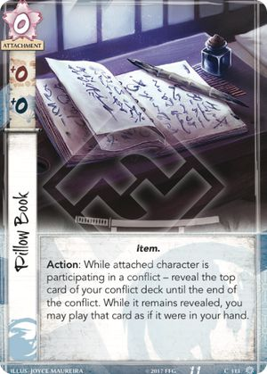
- 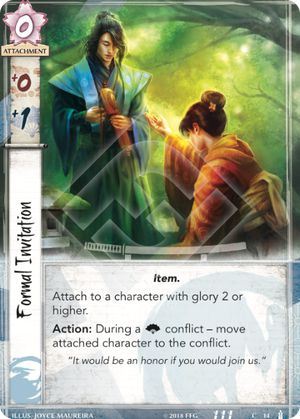
If attached character's glory becomes lower than 2 (e.g. due to Isawa Mori Seido's effect expiring), Formal Invitation becomes illegally attached and is discarded

The Mirror's Gaze says "ignore costs and triggering conditions". Costs are instructions like "Bow", "Spend", "Sacrifice", etc. Triggering conditions say "After", "When", "If". All of these are ignored. However, the pre-dash part of an ability might also contain play restrictions ("During", "While"), targeting requirements ("Choose"), or selections ("Select") - these are not ignored and must be fulfilled.
- The Mirror's Gaze cannot copy an event if its effects reference its cost or triggered condition (by using the words "it", "that", or "those").- The Mirror's Gaze can copy Breakthrough only if you've already initiated or passed exactly one conflict this phase. After your opponent plays Breakthrough and you Mirror it, you must wait for them to resolve their second conflict, before you get to initiate yours (effectively you just skip action windows between conflicts).
- The Mirror's Gaze can copy Calling in Favors. Since costs are ignored, there is no "that" character to attach the attachment to, so you have to discard it.
- If The Mirror's Gaze copies an event with a Max (e.g. Banzai!), it counts towards the Max (so you cannot mirror an opponent's Banzai! and play a Banzai! of your own during the same conflict).
- Isawa Tadaka does not prevent you from using The Mirror's Gaze to copy an opponent's event if you have another copy of it in your discard pile.
- If you play an event and your opponent uses The Mirror's Gaze to copy it, you can use your own Mirror's Gaze to copy the copied event.
The Mirror's Gaze cannot be used to copy the following events, because their effects reference their costs or triggering conditions by using the words "it", "that", or "those":
- Interrupts: all of them
- Reactions: Curry Favor, Display of Power, Indomitable Will, Ready for Battle, Way of the Chrysanthemum.
- Actions: I Am Ready, I Can Swim, Rebuild, Test of Skill.The Mirror's Gaze cannot be used to copy the following events, because they have play restrictions ("During", "While") that cannot be fulfilled by both players at the same time:
- Chasing the Sun, Harmonize, Raise the Alarm, Strength in Numbers.
If the effects of an ability are canceled, the ability is still considered to have been used, and any costs have still been paid.


If a participating character is bowed, it is still considered participating.

Sacrificing a friendly character is the cost of Noble Sacrifice. By the time the ability's effects can be cancelled, costs have already been paid, and a friendly character has aready been sacrificed.
If the pre-dash sacrifice is prevented (e.g. by Reprieve), the ability is prevented from initiating. The event remains unplayed in its owner's hand. A failed initiation attempt does not count towards Limits and Maximums. The opportunity to act is passed to the opponent.

The bonus provided by Disdainful Remark is fixed upon resolution. If the number of cards in the opponent's hand subsequently changes, the bonus is not affected.

Curry Favor is played after participating characters bow and move home at the end of a conflict, so Guests of Honor and Watch Commanders do not interact with Curry Favor.

If Test of Skill is played from the top of the conflict deck (via Artisan Academy or Pillow Book), it will count as one of the revealed cards, but it will not be added to your hand by its own effect.


If the card revealed by Artisan Academy is moved to another game zone and is no longer the top card of the deck, the lasting effect applying to it expires, and you can no longer play it.
A political conflict declared against the province with Chisei District can be switched to military (e.g. via Rally to the Cause).
Chasing the Sun and Talisman of the Sun can move the contested ring to a province with Chisei District during a military conflict.
- Dragon Clan


Agasha Swordsmith can only find a card with the printed attachment cardtype. Monk characters that can be played as attachments (Tattooed Wanderer, Togashi Kazue) are not attachments while they're out of play.
Only one character can be declared as a defender, but other characters can be played into or moved to the conflict.

Seeker of Enlightenment gets a bonus for each ring in the unclaimed ring pool. The currently contested ring does not count.

Enlightened Warrior can only trigger after an opponent selects a ring with fate on it when declaring a conflict. Switching rings via card effects (e.g. Know the World) does not trigger him.

"Max 1 per conflict" means that you can only trigger one Kitsuki Investigator per conflict, even if you control several of them.
Bowed characters do not contribute their skill whenever you count skill totals, but they still have their individual skill values (for duels, Outwit/Rout, etc.)

- 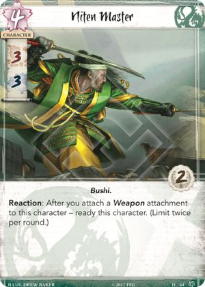
You can attach a third Restricted attachment to Niten Master, discard one of them so that there are only two left, then trigger Niten Master's ability.
Niten Master can trigger whenever a "Weapon" attachment becomes attached to him (even if the effect says "move" etc.)
If Togashi Yokuni has Way of the Dragon attached, he cannot use his own ability twice (because it says "Max", not "Limit"), but he can use the gained ability twice. "Max" is per ability per card title per player.
If Togashi Yokuni gains the ability of Kitsuki Investigator, both characters can use that ability this round (they have different titles).
If Yokuni gains the ability of an opponent's Yokuni, he cannot use that ability (no infinite loop).
Togashi Yokuni can gain the ability printed on Adept of Shadows, and use it to go to your hand. In this case, if you need to discard a card from hand at random (e.g. for losing an Earth conflict), if you use different sleeves for your dynasty cards and your conflict cards, you will need to use a method of randomness other than letting your opponent to pick a card from your hand (for example, use dice).
Togashi Yokuni can gain an ability printed on a character that is blanked by Cloud the Mind.
Togashi Yokuni cannot gain the ability of Togashi Kazue. Kazue has a constant ability while she's a character, not a triggered ability.
Togashi Yokuni can only target characters in play, not in provinces or discard piles. "Card abilities only interact with, and can only target, cards that are in play, unless the ability specifically refers to an out-of-play area or element."
Togashi Yokuni targets an ability, not a character, so cards like Shiba Yojimbo and Finger of Jade do not protect from Yokuni's ability.

If Kitsuki Yaruma enters play during a conflict (e.g. via Charge!) and turns the attacked province facedown, it is immediately turned faceup.
Turning a province facedown effectively makes it leave play. Thus, any abilities on that province can be used again (limits are reset), and lasting effects affecting that province expire (e.g. Ride Them Down, Disdainful Remark), and any tokens on that province are discarded (e.g. Public Forum).

Immunity only protects from effects. A card that is immune to events can still be used to pay an event card’s cost.
Event effects can still affect an immune card indirectly, by affecting its peripheral entities (tokens, attachments, triggered abilities), e.g.:- Consumed by Five Fires can remove fate from an immune card.- Calling in Favors can dishonor an immune card (as a cost) and attach an attachment to it.

Enigmatic Magistrate only affects even-costed characters by negating their skill. It does not ever make odd-costed characters contribute their skill in circumstances when they would not normally do so.


Itinerant Philosopher's ability can only be used if you control the Imperial Favor. Discarding it is a cost of the ability.
When you discard the Imperial Favor, return it to the unclaimed state.
- 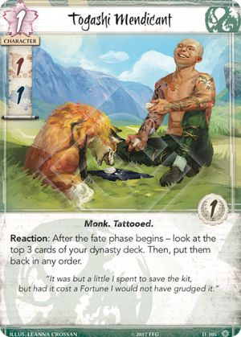

The defending player chooses the element from the options available to the attacking player, i.e. among the unclaimed rings, and accounting for any restrictions (e.g. Way of the Phoenix).
The attacking player is still the one who 'selects' the ring, so the defending player can trigger Enlightened Warrior.
Characters played as attachments do not provide their printed skills as bonuses. "Skill" and "Skill bonus" are different values.
Multiple instances of the same keyword are redundant.

Characters played as attachments do not provide their printed skills as bonuses. "Skill" and "Skill bonus" are different values.
Characters played as attachments do not provide their printed skills as bonuses. "Skill" and "Skill bonus" are different values.

An Ancestral attachment only goes to your hand if the card it is attached to leaves play. If an Ancestral attachmentis is discarded by a card effect (e.g. Let Go or Miya Mystic) or due to a character having three of more Restricted atachments, it goes into the discard pile as normal.
If you take control of an Ancestral attachment (e.g. via Calling in Favors), when the card it is attached to leaves play, the attachment goes to its owner's hand.

Daimyo's Favor can reduce the cost of characters played as attachments (Tattooed Wanderer, Togashi Kazue).
An Ancestral attachment only goes to your hand if the card it is attached to leaves play. If an Ancestral attachment is discarded by a card effect (e.g. Let Go or Miya Mystic) or due to a character having three of more Restricted atachments, it goes into the discard pile as normal.
If you take control of an Ancestral attachment (e.g. via Calling in Favors), when the card it is attached to leaves play, the attachment goes to its owner's hand.
Way of the Dragon does not work with abilities that say "Max X per period" ("Limit" applies to one particular card, "Max" applies to all cards with the same title).

- 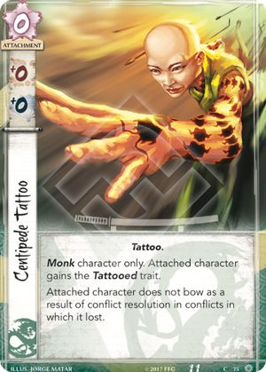
Fate stays on rings even while they're contested or claimed.
When attached character becomes bowed, your opponents do not take fate from contested or claimed rings. Fate is only taken when a ring transitions to the contested state.
The Stone of Sorrows prevents the opponent from using Jade Masterpiece.


Reactions to a conflict being declared, to attackers committing to the conflict, and to a province being revealed, all share the same reaction window (first player gets the first opportunity to trigger their reaction).
Mantra of Fire can be played if your opponent declared a Fire conflict - doesn't matter if the contested ring was subsequently switched by Elemental Fury.

Tranquility applies a lasting effect "Cannot use triggered abilities" to each character that is at your opponent's home during the event's resolution. It does not create a blanket effect.If a character enters the opponent's home after Tranquility resolves, it can trigger its abilities, because it was not affected.If a character that was at the opponent's home when Tranquility resolved is moved to the conflict, it cannot trigger its abilities, because the lasting effect still applies to it.


The province stronghold also counts. Each player has 5 provinces.

High Kick prevents "Action:", "Reaction:", and "Interrupt:" abilities from being triggered. Constant abilities and keywords are not affected.
Reactions to a conflict being declared, to attackers committing to the conflict, and to a province being revealed, all share the same reaction window (first player gets the first opportunity to trigger their reaction).
Mantra of Water can be played if your opponent declared a Water conflict - doesn't matter if the contested ring was subsequently switched by Elemental Fury.
There must be a "bowed" Monk character or a character with a Monk attachment in play (either yours, or your opponent's) in order for you to be able to play Mantra of Water, otherwise you wouldn't have any legal targets. "A card is not an eligible target for an ability if the resolution of that ability's effect could not affect the target at all."


The bonus provided by Mountain's Anvil Castle is fixed upon resolution. If the number of attachments subsequently changes, the bonus is not affected.

Mountaintop Statuary does not attach to the stronghold province, rather it gets placed in it, and exists there along with the stronghold itself. Provinces can have multiple cards in them. So you could move 3 copies of Mountaintop Statuary to the stronghold province, and each would provide its +1 strength bonus.You can discard Mountaintop Statuary from the stronghold province during the Regroup phase, but only empty provinces refill, and the stronghold province is never empty.
Rebuild puts the holding into play faceup, it is not turned faceup at any point, so the triggering condition of Mountaintop Statuary is not met.
Cards are discarded all at once. You cannot discard down to fewer than 4 cards.

- Lion Clan

You can play Obstinate Recruit if you are less honorable than an opponent, but it will immediately be discarded.


The Pride keyword resolves immediately when the conflict winner is determined, before any Reactions to winning/losing a conflict can be used.


When Kitsu Spiritcaller attempts to return a character to the bottom of the deck, that character can be prevented from leaving play by Repreive, Stand Your Ground, etc.


Ikoma Eiji's ability cannot put characters straight into the conflict (specifically, you cannot combo it with Deathseeker).

Akodo Toturi's ability can be triggered if you claim the ring on defense. However, the attacking player gets the benefit of the ring effect (notice the wording here is different from Defend the Wall).
If the defending player wins a conflict and triggers Toturi's ability, the attacking player "must" resolve the ring effect.
- 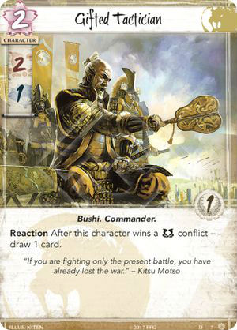
Ikoma Ujiaki's ability cannot be used if all cards in your provinces are faceup. "If the pre-Then aspect of an effect does not successfully resolve in full, the post-Then aspect does not attempt to resolve."
Ikoma Ujiaki's ability can only be used if you control the Imperial Favor. Discarding it is a cost of the ability.
When you discard the Imperial Favor, return it to the unclaimed state.
- 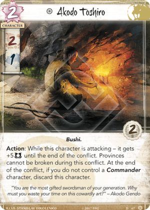
If Akodo Toshiro leaves the conflict after using his ability, the lasting effect will persist regardless.
Implacable Magistrate only affects other dishonored and ordinary characters by negating their skill. It does not ever make honored characters contribute their skill in circumstances when they would not normally do so.
- 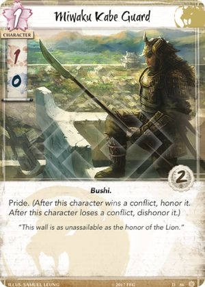

- 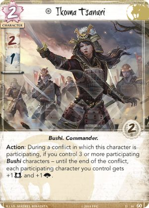

Courtier characters cannot be declared as defenders, but can be played into the conflict from hand, and can be moved to the conflict by card effects.

Vengeful Oathkeeper can only enter play at home via its ability, not in the conflict.

Only the fate cost of events is increased, not any additional costs of abilities on those events.
You cannot trigger Guidance of the Ancestors from your discard pile if you cannot pay the attachment's cost (to get the ability canceled by Hida Kisada).
Guidance of the Ancestors is still bound by the general "limit once per round" rule. So if you trigger its ability and it gets canceled by Hida Kisada, you cannot trigger it again this round. Leaving play resets the limit. So if you play Guidance of the Ancestors from the discard pile, then it gets discarded from play (e.g. by Let Go), you can use its ability again this same round.


Kamayari triggers after the effects of a triggered ability initiate (step 6), but before they resolve (step 7). It can still trigger even if the effects of the ability are canceled.
Kamayari does not target (does not say "choose"), so it cannot be cancelled by Finger of Jade.

- 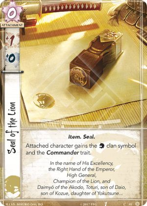


Stand Your Ground can be used to prevent a sacrifice. However, if a card ability requires a sacrifice as a cost (before the dash ("–") in the ability's text), the ability will be prevented from initiating. If that ability originates from an event card, that event remains unplayed in its owner's hand. A failed initiation attempt does not count towards Limits and Maximums. The opportunity to act is passed to the opponent.

If you play two copies of Way of the Lion on the same character, its new base military skill will be equal to 4x its original base (printed) skill.
Way of the Lion and Bayushi Yunako interact in timestamp order (no layers). If you play Way of the Lion first, then trigger Yunako, the affected character will have a new base political skill equal to double its original base (printed) military skill.


Effects that modify the value of the honor bid only affect the current bid, the setting on the dial is not physically adjusted.
Test of Courage cannot target participating characters, or characters that cannot participate in the conflict. "If the pre-Then aspect of an effect does not successfully resolve in full, the post-Then aspect does not attempt to resolve."
- 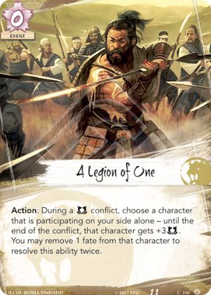
The sequence of playing A Legion of One:
- Announce playing A Legion of One
- Step 5: Choose a target
- Step 6: Effects initiate (if canceled, stop here)
- Step 7: Effects resolve - Target gets +3 mil.
- You may remove 1 fate from it. If you do, continue:
- Step 5b: Choose a target
- Step 6b: Effects initiate (if canceled, stop here)
- Step 7b: Effects resolve - Target gets +3 mil.
- You may remove 1 fate from it. If you do, nothing happens.
Removing 1 fate to "resolve the ability twice" is an optional part of the card's effect, not a cost.
A Legion of One can be canceled in step 6 (before any effects resolve) or in step 6b (after the target gets +3 mil and loses 1 fate). 
Even the Odds can be played to honor a Commander character that is already participating in the conflict, or one that cannot be moved to the conflict (honoring is not dependent on moving).
Yojin no Shiro only affects characters that are already attacking. Any characters that enter the conflict after the ability has resolved are not affected.
Hisu Mori Toride allows you to initiate an additional military conflict, in addition to your standard one military and one political conflicts (so for a total ot 3 conflicts).

A military conflict declared against the province with Hito District can be switched to political (e.g. via Rally to the Cause).
Chasing the Sun and Talisman of the Sun can move the contested ring to a province with Hito District during a political conflict.

- Phoenix Clan
If Shiba Peacemaker somehow ends up participating as an attacker (e.g. Blackmailed), he immediately goes home bowed.


Multiple instances of the same keyword are redundant.


Radiant Orator's ability is not a Glory Count, so it does not take claimed rings or The Imperial Palace into account.


If the effects of an ability are canceled, the ability is still considered to have been used, and any costs have still been paid.
Shiba Yojimbo cancels the effects of an ability when they initiate (in step 6) only if a Shugenja character has already been chosen as a target (in step 5; the ability's text must use the word "choose" before the dash (–) in the ability's text) .Some abilities choose targets when the effects resolve (in step 7; "choose" is after the dash, e.g. Court Games, Shosuro Miyako), at that point it is too late to cancel their initiation.
Shiba Yojimbo cancels *all* effects of an ability that targets a Shugenja, even if that ability has multiple targets (e.g. Shameful Display, Ide Tadaji).
Shiba Yojimbo cannot cancel the ability of Shosuro Actress that targets a Shugenja in a discard pile, because Yojimbo does not "see" traits on cards out of play.

Fearsome Mystic retains its +2 glory bonus until the end of the conflict, even after the Air ring is claimed.

Isawa Atsuko's ability only affects characters that are already participating in the conflict. Any characters that enter the conflict after her ability has resolved are not affected.

"When the phase ends" interrupts trigger before "until the end of the phase" lasting effects expire, and before "at the end of the phase" delayed effects resolve.
When an effect instructs a player to resolve multiple ring effects the first player chooses the order in which they resolve.

While the contested ring has the Void element, the current conflict is considered to be a Void conflict (in addition to any other elements of the contested ring).
- Isawa Atsuko's ability can be used.
- Keeper of Void can be triggered after you win the conflict on defense;
- Void ring effect can be resolved whenever a player resolves the ring effect (including via card abilities);
- Keeper Initiate and Seeker Initiate can be triggered after you claim a that gained the Void element via Isawa Kaede.When an effect instructs a player to resolve multiple ring effects the first player chooses the order in which they resolve.
Isawa Kaede does not let you resolve Void twice - a ring either has a certain element, or it doesn't.
If a player plays Display of Power after Isawa Kaede wins the conflict as an attacker, that player gets to resolve all of the contested ring's effects.
Resolving ring effects "as the attacking player" is optional. You may choose not to resolve some (or all) of the ring effects.
Young Rumormonger can redirect the Fire ring effect to Isawa Kaede.
If Akodo Toturi or Doji Hotaru win the conflict on defense and trigger their ability, the attacking player is considered to be resolving the ring effect, so Isawa Kaede would not be immune to it.
If you use Guardian Kami or Kami Unleashed while Isawa Kaede is attacking, you only get to resolve one ring effect (of your choice). Kaede did not actually win this conflict, so her "resolve all ring effects" ability does not apply.

Henshin Disciple gets +2 political skill while the contested non-Air ring has the Air element via Seeker of Knowledge.

Master Of Gisei Toshi instructs you to target a physical ring. If another ring gains the same element (via Seeker of Knowledge or Isawa Kaede), the Master's effect does not apply.


If Kaito Temple Protector targets a character with a dash for a skill value, its own corresponding current skill value is set to a dash (not 0).
Set modifiers override all non-set modifiers, including switch (Along the River of Gold, Bayushi Yunako).

Isawa Tadaka prevents your opponent from using Kyuden Isawa
Fushicho's ability resolves while it is still in play. It cannot put into play another copy of itself, because it's unique.
When a triggering condition initiates (but before it completes its resolution), an interrupt window for that triggering condition opens. Always resolve interrupts to a triggering condition before resolving the consequences of the triggering condition itself.If Fushicho leaves play during a conflict, it cannot put another character into play in the conflict, only at home.

Isawa Uona can be triggered even if an Air event is canceled.
Ishiken Initiate gets a bonus for each ring claimed by any player. The currently contested ring does not count.

While the contested ring has the Air element, the current conflict is considered to be an Air conflict (in addition to any other elements of the contested ring):
- Fearsome Mystic gets her glory bonus;
- Keeper of Air can be triggered after you win the conflict on defense;
- Air ring effect can be resolved whenever a player resolves the ring effect (including via card abilities);
- Keeper Initiate and Seeker Initiate can be triggered after you claim a ring that gained the Air element via Seeker of Knowledge.Isawa Kaede trumps Seeker of Knowledge.The second sentence of the Seeker's text is redundant with the general rule for resolving effects of rings with multiple elements (see RRG "Ring Effects"). It does not carry any functional meaning.


Kaito Kosori received official errata clarifying that she needs to be ready in order to contribute her skill to the conflict.
Kaito Kosori does not contribute her skill while at home if she is bowed, or if a relevant Magistrate is present in the conflict
During conflicts at Sanpuku Seido, Kaito Kosori counts her glory.
While Kaito Kosori contributes her skill from home, she is not participating in the conflict. So if you win the conflict and she has Honored Blade attached, you cannot trigger it - she did not win the conflict, even though she contributed.

The Pride keyword resolves immediately when the conflict winner is determined, before any Reactions to winning/losing a conflict can be used.
Grasp of Earth does not prevent characters from being 'put into play' in a conflict.The "cannot move to this conflict" part of the effect only applies to opponents' characters that are in play when the effect resolves. Certain "Monk" characters (e.g. Tattooed Wanderer, Togashi Kazue) can still be played as attachments in the conflict.

Pacifism can be played during the action window before a conflict (between steps 3.1 and 3.2), or during action windows in Draw, Fate, or Regroup phases.
If attached character somehow ends up participating in a military conflict, it immediately goes home bowed.
Embrace the Void can be triggered any time fate is removed from attached character:
- During the Fate phase;
- Due to the Void ring effect;
- Due to a card ability that says "remove" (Meditations on the Tao), "return" (Jade Tetsubo), or "move" (Togashi Kazue) fate;
- When attached character leaves play (e.g. Assassinated).If multiple copies of Embrace the Void, controlled by different players, are attached to the same character, the most recently triggered copy determines where fate goes. So if one player activates his copy, the other player will get the fate. It's a mexican standoff.
Embrace the Void can only be triggered if it is established that attached character is going to leave play, i.e. after the opportunity to prevent it from leaving play (with Reprieve, Stand Your Ground, etc.) has passed.
Embrace the Void can only be played if you control a Shugenja character in play.
Card abilities only interact with, and can only target, cards that are in play, unless the ability specifically refers to an out-of-play area or element.
Katana of Fire does not give a skill bonus for "Keeper of Fire" and "Seeker of Fire" roles, because they are not in play.

The bonus provided by Supernatural Storm is fixed upon resolution. If the number of your Shugenja characters subsequently changes, the bonus is not affected.

If you choose a ring that gained other elements during a conflict (e.g. via Seeker of Knowledge, Isawa Kaede), the effect will prevent your opponent from initiating conflicts with any of those elements until the end of the phase.
- 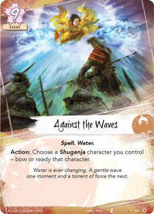
Rings have three disticts states - claimed, unclaimed, and contested. A contested ring is neither claimed not unclaimed. You cannot play Know the World to switch the contested ring.
Know the World does not trigger Keeper Initiate or Seeker Initiate (you do not claim the ring, you just place it into your claimed pool).
"(Retain the ring's conflict type)" – When a ring is claimed, it is placed in your claimed pool indicating the type of the ongoing conflict. Relevant for cards like Shiotome Encampment.
When you play Know the World, you take a ring from the unclaimed ring pool and place it in your claimed ring pool same side up as the ring that you are returning.
Example: During a military conflict you claim the Air ring, and place it in your claimed ring pool military side up. Then you play Know the World and switch your claimed Air ring with an unclaimed Earth ring. You place the Earth ring to your claimed ring pool retaining the Air ring's conflict type - military side up.
Display of Power is played right after the winner of an unopposed conflict is determined (step 3.2.3) It creates a delayed effect that cancels the normal ring effect (step 3.2.6). Then, the defending player resolves the ring effect and claims the ring.
If Display of Power is played at Pilgrimage and the province is not broken, the ring effect is canceled, but the defending player claims the ring.
If the contested ring has multiple elements (e.g. via Seeker of Knowledge, the defending player may choose which ring effect to resolve for Display of Power.
Resolving ring effects *as the attacking player* is optional. You may choose not to resolve the ring effect, and just claim the ring.
If a player plays Display of Power after Isawa Kaede wins the conflict as an attacker, that player gets to resolve all of the contested ring's effects.


Consumed by Five Fires can only be played if you control a Shugenja character "in play". "Card abilities only interact with, and can only target, cards that are in play, unless the ability specifically refers to an out-of-play area or element."
Consumed by Five Fires does not target characters, so it can remove fate from characters that are protected from targeting (Above Question, Spreading the Darkness, Finger of Jade).
- 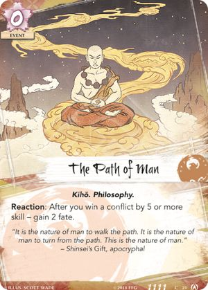

You can play Know the World and interrupt its resolution with Wholeness of the World. You will add a new ring to your claimed ring pool without giving up the one you already had.

The entire effect of Clarity of Purpose lasts until the end of the conflict.

You need an eligible card to move fate to, in order to play Karmic Twist. You cannot move fate from a character to nowhere.
When an entity moves, it cannot move to its same (current) placement. If there is no valid destination for a move, the move attempt cannot be made.

Glory count happens before the conflict phase ends, so Isawa Mori Seido can help you claim the Imperial Favor.
If a Spell event played via Kyuden Isawa has its effects canceled, it is still removed from the game.
Cards are removed from the game faceup.Kyuden Isawa cannot be used to play Display of Power.


If there are fewer than 3 cards in the opponent's deck, you can resolve the effects in whatever order you want. For example, you can discard one card and put another one on the bottom of the deck, and not put anything on top.
- 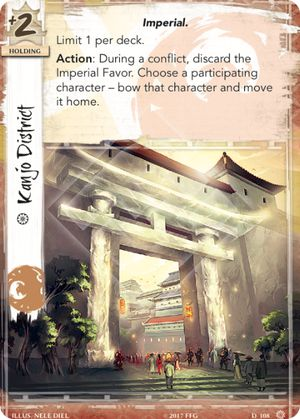

A ring affected by Secluded Shrine counts as a claimed ring for Prodigy of the Waves, Solemn Scholar, Henshin Disciple, and Ishiken Initiate.
However, affecting a ring by Secluded Shrine does not count as claiming a ring for Keeper/Seeker Initiate or Asako Tsuki.A ring affected by Secluded Shrine counts towards the Imperial Favor contest.
If you use Shrine on a ring and then claim it, it only counts once.
If you use Shrine on a ring and your opponent claims it, it counts for both players.You cannot play Know the World to switch a ring affected by Secluded Shrine if it is not actually in your claimed pool.
If the Air ring is affected by one player's Secluded Shrine, but is physically in another player's claimed pool, both players are considered to have it claimed. In this case, Fū Sui Disciple's controller may choose against which player to resolve its ability.
Changing the conflict type does not affect what other conflicts the attacker can declare. What matters is which conflict type was originally declared.
When the conflict type is switched, any characters that cannot participate in the conflict of the new type (have a dash (–) for a skill, or have Pacifism attached) immediately go home bowed.
Once the new ring becomes the contested ring, the attacking player takes all fate on it.
- 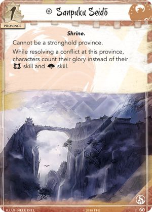
The Imperial Favor bonus still applies during conflicts at Sanpuku Seido.
While at Sanpuku Seido, any skill counts (e.g. Kakita Asami, Crisis Breaker) count glory instead.
While at Sanpuku Seido, Magistrates prevent relevant characters from counting their glory.
- Scorpion Clan

Effects that modify the value of the honor bid only affect the current bid, the setting on the dial is not physically adjusted.


Young Rumormonger cannot redirect honor to an honored character (or dishonor to a dishonored character), because the ability would not affect that character at all, thus it would not be an eligible target.
If Young Rumormonger is used to change the recipient of dishonor when paying costs, the cost is still considered to be paid (e.g. Forged Edict, Spies at Court, Calling in Favors).
Young Rumormonger can redirect the Fire ring effect to Isawa Kaede.
Young Rumormonger cannot interrupt a "fizzling" triggering condition (e.g. Shameful Display attempting to honor an honored character) - that triggering condition is never created in the first place.
If two ordinary characters would be simultaneously (dis)honored by Pride or The Art of Peace, Young Rumormonger can redirect (dis)honor from one character to the other, so that only one character will end up (dis)honored, and the other one will be unaffected.
Young Rumormonger is not bound by any targeting restrictions of the ability that he is interrupting.


Shosuro Actress cannot put an opponent's unique character into play if you or that opponent already own or control another copy of that character in play.
"Seeker/Keeper only" is a deckbuilding restriction. You can take control of cards that do not match your role

Your opponent must select an option that can change the game state (cannot choose to dishonor a dishonored character).
If your opponent selects the option to dishonor a character, the target is chosen during the resolution of the ability's effects. At that point it is too late to cancel the initiation of effects (e.g. via Shiba Yojimbo).
*Note that this is a non-standard template, usually you choose targets before the opportunity to cancel the initiation of effects (the word "choose" is usually printed before the dash (–) in the ability's text).*
Bayushi Yunako cannot switch base skills on a character that has a dash (–) for a skill (dash values cannot be modified or changed).

Yogo Hiroue can move bowed characters to a conflict (the ability doesn't say "choose a "ready" character").
Yogo Hiroue cannot target participating characters, or characters that cannot participate in the conflict. "If the pre-Then aspect of an effect does not successfully resolve in full, the post-Then aspect does not attempt to resolve."
You cannot move a character to a conflict if that character cannot participate in that conflict (has a dash (–) for a skill, or a relevant constant ability, e.g. Shiba Peacemaker, Pacifism).
Yogo Hiroue's delayed effect ("if you win the conflict...") applies before the Pride keyword. Reactions to winning/losing the conflict, to Yogo Hiroue's delayed effect, and to the Pride keyword, all share the same window.

"Discard if political skill is 0" is a part of the lasting effect that applies until the end of the conflict.
If Shoju's ability doesn't lower the character down to 0 skill immediately, but a subsequent effect during the same conflict does, the character will be discarded.
If a replacement effect is used to prevent the character from leaving play (e.g. Reprieve, Stand Your Ground) but does not concurrently increase its political skill above 0, Shoju's effect will immediately reapply, and the character will be discarded again.
If Bayushi Shoju leaves the conflict after using his ability, the lasting effect will persist regardless.

While Bayushi Yojiro is participating in a conflict, characters are still considered to be honored or dishonored (for the purpose of Voice of Honor, Noble Sacrifice, etc.), but they do not receive glory modifiers to their skills, and they do not make their controller gain/lose honor when they leave play.

When the "Interrupt" ability is used, the character still leaves play, only its destination changes.
- Characters attached to Back-Alley Hideaway are not in play, they are neither attachments nor characters - just facedown cards. The holding's controller may look at them any time.The "Action" ability may be used in any action window, even outside of the Dynasty phase. If it is used during a conflict, the character can only be enter play at home, not in the conflict. (see RRG "Character Cards").
You need to pay the fate cost of the character to play it.
Certain characters (e.g. Tattoed Wanderer or Togashi Kazue) can be played from Back-Alley Hideaway as attachments.
A character played from Back-Alley Hideaway comes into play under your control, even if it is owned by your opponent (e.g. was Blackmailed).
Characters attached to Back-Alley Hideaway cannot be Charge-d, Ambush-ed, or discarded as duplicates to place fate on other copies in play. The "as if it were in this province" line only affects how the Action ability on Back-Alley Hideaway functions, not how attached facedown cards function in general.

- 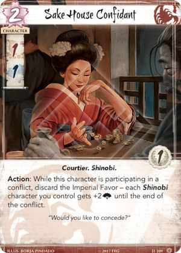

The order of cards in a discard pile may not be altered unless a player is instructed to do so by a card ability.
Illustrious Plagiarist can only gain "Action" abilities, not Reactions or Interrupts. He also does not gain any play restrictions that are printed outside of the Action ability's text (e.g. Blackmail, Good Omen). You do not need to pay the fate cost of the gained ability.
You do not need to pay the fate cost of the event to use the gained ability, but you do need to pay any costs of the ability written before the dash (e.g. lose 3 honor for Assassination).
The ability cannot be canceled by Voice of Honor, Forged Edict, Censure. It is a character ability, not an event.
Maximums are per ability per card title per player. So you can play Banzai!, use Illustrious Plagiarist to copy your opponent's Banzai!, and use his gained ability. However, two Illustrious Plagiarists each copying Banzai! cannot both trigger during the same conflict.
If you attach Way of the Dragon to Illustrious Plagiarist (e.g. via Calling in Favors), you can use his ability twice per round, and then use each of the two copied abililities twice.
Soshi Shadowshaper cannot target character cards played as attachments (e.g. Ancient Master, Tattooed Wanderer) - those are not characters while in play.

Heartless Intimidator can be triggered after honor is transfered (given/taken) from an opponent.

If a card leaves play and re-enters play during the same period, it is considered a new instance of the card and there is no memory of having used the ability during the specified period. (This rule also applies to any ability with no specified limit.)
If you take control of Adept of Shadows (e.g. via Blackmail or Shosuro Actress) and use its ability, it goes to its owner's hand.


- 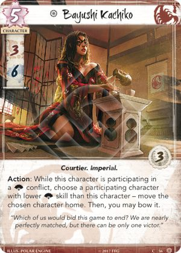


Yogo Kikuyo received official errata clarifying that her ability can only be used while she is in your hand.
When Yogo Kikuyo's ability is used, she can only enter play at home, not in a conflict.

Dishonoring a character is an effect of Court Mask's ability, not a cost. So you can return it to your hand even if attached character cannot be dishonored (already dishonored, or Steward of Law is participating in the conflict).
If you take control of Court Mask (e.g. via Calling in Favors) and use its ability, it goes to its owner's hand.

- 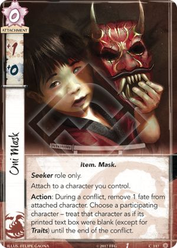
Only printed text is blanked. Text gained from another source is not blanked.

If the effects of an ability are canceled, the ability is still considered to have been used, and any costs have still been paid.

If a Scorpion character gains another clan affiliation (e.g. via Seal of the Crab), it is still a Scorpion character, and thus not an eligible target for Way of the Scorpion.

If Young Rumormonger redirects the dishonor, the cost is still considered to be paid, and the character that was originally selected for dishonor gets the attachment.
If Calling in Favors is used to dishonor a character and take control of an opponent's attachment that is attached to that same character (e.g. Cloud the Mind, Fiery Madness, the attachment stays in play.
"Seeker/Keeper only" is a deckbuilding restriction. You can take control of cards that do not match your role.
If you take control of an opponent's unique attachment (e.g. Talisman of the Sun), neither player can play another copy of that attachment (because each player either owns or controls a copy in play).
If you control a unique attachment, you can attempt to take control of another copy of that attachment. Since you cannot take control of it, it will be discarded.
Effects that modify the value of the honor bid (e.g. Contingency Plan, Bayushi Manipulator) only affect the current bid, the setting on the dial is not physically adjusted. Duels physically adjust the setting on the dial, same way as honor bids during the Draw phase.
When playing Ambush, you need to reveal the characters that you're going to put into play before your opponent gets the opportunity to cancel the event's effects.
When you take control of a character, you do not take control of any attachments attached to that character.
If you take control of a character that has an attachment that says "Attach only to characters you control", that attachment is immediately discarded.
If you take control of a non-participating character, it goes to your home, it does not enter the conflict.
If you take control of a participating character that cannot participate in the current conflict on your side (e.g. Shiba Peacemaker), it immediately bows and goes home.
A Blackmailed character is considered to be "friendly", and can be sacrificed to pay the cost of certain abilities (e.g. Noble Sacrifice).
If you Blackmail a character that has already used its ability, you can use it again. Limits and Maximums are player-specific.
"Seeker/Keeper only" is a deckbuilding restriction. You can take control of cards that do not match your role.
Smoke only affects characters that are already participating in the conflict. Any characters that enter the conflict after the ability has resolved are not affected.
Effects that modify the value of the honor bid only affect the current bid, the setting on the dial is not physically adjusted.
Misinformation only affects characters that are already participating in the conflict. Any characters that enter the conflict after the event has been played are not affected.
- 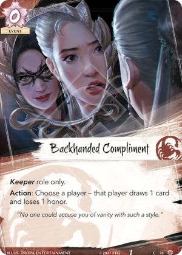
- 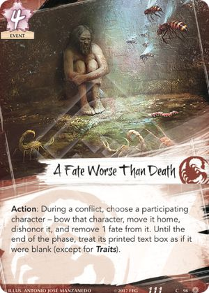
All effects of A Fate Worse Than Death resolve simultaneously. A defending Borderlands Defender would be dishonored, lose fate, and become blanked, but it would not bow or move home. An "ordinary" Steward of Law would not be dishonored.

Your honor dial remains set to the new value.


Only the fate cost of the next event is reduced, not any additional costs of the ability on that event.

If you use Secret Cache to find an event card with a reaction to a conflict being declared (e.g. Mantra of Fire), you can play it during the same reaction window.
If Chasing the Sun or Talisman of the Sun are used to move the contested ring to Secret Cache, the province's ability cannot be triggered, because an attack is not being declared.
- Unicorn Clan

If a conflict is declared as political but is then switched to military (or vice versa), it counts as both a military conflict and a political conflict having occured this round. Any subsequent military conflict will not be the first one this round.

Aggressive Moto cannot be declared as a defender, but can be moved to a conflict on the defending side by card effects.


Ide Trader's ability can only be triggered after a character is moved to a conflict by a card ability that uses the word "move" or "switch" (Master of the Swift Waves).
Declaring a character as an attacker or defender, playing or putting a character into play in the conflict, are not considered to be "moving" that character.Ide Trader's ability can be triggered after he himself is moved to a conflict.

Warrior Poet's ability only affects characters that are already participating in the conflict. Any characters that enter the conflict after the ability has resolved are not affected.If Warrior Poet leaves the conflict after using her ability, the lasting effect will persist regardless.


Shinjo Tatsuo's ability cannot be used if he is already participating in a conflict. "The targering requirement is to choose himself and another character, but targets are only eligible if they can be affected by the ability's effects; since Shinjo Tatsuo cannot affect himself, he cannot choose himself as a target, which means that you cannot satisfy targeting requirements, so you cannot attempt to initiate the ability at all."


- 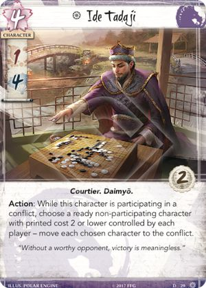
You need two eligible targets to initiate Ide Tadaji's ability, one controlled by each player.
You cannot move a character to a conflict if that character cannot participate in that conflict (has a dash (–) for a skill, or a relevant constant ability, e.g. Shiba Peacemaker, Pacifism).

- 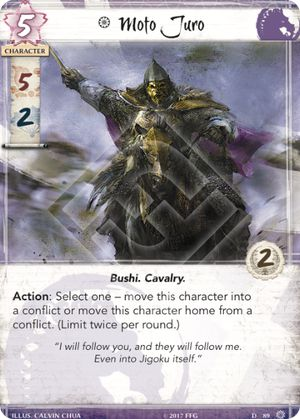

Shinjo Shono's ability only affects characters that are already participating in the conflict. Any characters that enter the conflict (or gain/lose the Cavalry trait) after the ability has resolved are not affected.
If Shinjo Shono leaves the conflict after using her ability, the lasting effect will persist regardless.


Reactions to a conflict being declared, to attackers committing to the conflict, and to a province being revealed, all share the same reaction window (first player gets the first opportunity to trigger their reaction).

During a conflict, the contested ring does not count as unclaimed.


Any lasting effects applying to the previously attacked province (e.g. Ride Them Down, Disdainful Remark) do not carry over to the new one.
The contested ring can be moved to a province with Hito District during a political conflict (it is eligible to be attacked).
The contested ring cannot be moved to the stronghold province unless three other provinces are broken (it is not eligible to be attacked).

Breakthrough is played after participants of the first conflict go home bowed, and a new conflict starts immediately. There is no action window between conflicts in which you could ready a character in time for it to be declared as an attecker (e.g. Border Rider, I Am Ready).
If you pass your first conflict opportunity, you cannot declare your second conflict, so you cannot play Breakthrough.
If Waning Hostilities was played this phase, Breakthrough cannot be played.

Changing the conflict type does not affect what other conflicts the attacker can declare. What matters is which conflict type was originally declared.
When the conflict type is switched, any characters that cannot participate in the conflict of the new type (have a dash (–) for a skill, or have Pacifism attached) immediately go home bowed.
Losing 1 honor is the cost of Captive Audience. By the time the ability's effects can be cancelled, costs have already been paid, and honor has already been lost.


Any lasting effects applying to the previously attacked province (e.g. Ride Them Down, Disdainful Remark) do not carry over to the new one.
The contested ring can be moved to a province with Hito District during a political conflict (it is eligible to be attacked).
The contested ring cannot be moved to the stronghold province unless three other provinces are broken (it is not eligible to be attacked).

Gaijin Customs can only be played if you control a Unicorn card "in play" ."Card abilities only interact with, and can only target, cards that are in play, unless the ability specifically refers to an out-of-play area or element."
Golden Plains Outpost(the Unicorn stronghold) is a Unicorn card that is in play under your control, so it fulfills the requirement to play Gaijin Customs.
If a Unicorn character gains another clan affiliation (e.g. via Seal of the Crab) it is still a Unicorn character, and thus not an eligible target for Gaijin Customs.

Ride Them Down received official errata, its effect now lasts until the end of the conflict.

- 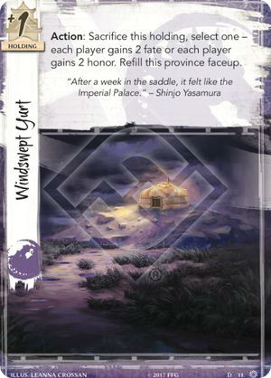

When a ring is claimed, it is placed in your claimed pool indicating the type of the ongoing conflict.

If Endless Plains is broken to discard the only attacker, the conflict does not end immediately, but rather continues as normal. The defending player can declare defenders, and both players can play characters from hand into the conflict, or use card effects to put characters into play or move them to the conflict. However, if both players count 0 skill during conflict resolution, the conflict resolves with no winner, and the contested ring is returned to the pool of unclaimed rings.
If Endless Plains is broken as a cost of its ability, even though technically its controller broke it, any card effects referencing the attacker or the conflict breaking a province can still trigger (e.g. Shinjo Altansarnai, For Greater Glory, Breakthrough). The attacking player also can discard the dynasty card from the province.
In a Unicorn mirror match, if Endless Plains breaks as a cost of its ability (step 4), and Shinjo Altansarnai is attacking, she can react to a province being broken (nested ability sequence), before she is chosen as a target (step 5) and discarded (step 7).
If Chasing the Sun or Talisman of the Sun are used to move the contested ring to Endless Plains, the province's ability cannot be triggered, because an attack is not being declared.
- Neutral

If Otomo Courtier somehow ends up participating in a military conflict (conflict type switched), or participating as an attacker against a player that controls the Imperial Favor (e.g. Blackmailed), it immediately goes home bowed.

If Seppun Guardsman somehow ends up participating in a military conflict (conflict type switched), or participating as an attacker against a player that controls the Imperial Favor (e.g. Blackmailed), he immediately goes home bowed.

Keeper Initiate reacts to claiming the ring, which occurs after the ring effects resolve (you cannot put him into play, then honor him via the Fire ring).
Keeper Initiate's ability *can* be triggered after you claim a ring that gained the relevant element temporarily during a conflict (e.g. via Seeker of Knowledge, Isawa Kaede).
Keeper Initiate's ability cannot be triggered while he is in play. "If the pre-Then aspect of an effect does not successfully resolve in full, the post-Then aspect does not attempt to resolve."

Seeker Initiate can be triggered after you claim a ring that gained the relevant element temporarily during a conflict (e.g. via Seeker of Knowledge, Isawa Kaede).

Seppun Ishikawa only counts Imperial cards that are in play. Holdings in provinces are in play, but characters in provinces are not.
Card abilities only interact with, and can only target, cards that are in play, unless the ability specifically refers to an out-of-play area or element.Broken Imperial provinces are in play, but they are considered to have a blank text box, so they do not count.
Imperial Favor does not count as an Imperial card (it does not have that trait).
- 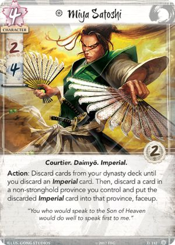
If Miya Satoshi fails to find any Imperial cards, and discards your whole deck, the rest of the effect fizzles. You do not lose 5 honor and reshuffle the discard pile into the deck - you only do that when you refill provinces or draw cards.

Kudaka can be triggered after you claim a non-Air ring that has the Air element via Seeker of Knowledge.


Only printed text is blanked. Text gained from another source is not blanked.
Cloud the Mind can only be played if you control a Shugenja character "in play". "Card abilities only interact with, and can only target, cards that are in play, unless the ability specifically refers to an out-of-play area or element."

If the effects of an ability are canceled, the ability is still considered to have been used, and any costs have still been paid.
Finger of Jade cancels the effects of an ability when they initiate (in step 6) only if attached character has already been chosen as a target (in step 5; the ability's text must use the word "choose" before the dash (–)).
Some abilities choose targets when the effects resolve (in step 7; "choose" is after the dash, e.g. Court Games, Shosuro Miyako), at that point it is too late to cancel their initiation.Finger of Jade cancels *all* effects of an ability that targets attached character, even if that ability has multiple targets (e.g. Shameful Display, Ide Tadaji).
Finger of Jade can cancel the Covert keyword.


Losing 3 honor is the cost of Assassination. By the time the ability's effects can be cancelled, costs have already been paid, and honor has already been lost.
The sequence of playing Banzai!:
- Announce playing Banzai!
- Step 5: Choose a target
- Step 6: Effects initiate (if canceled, stop here)
- Step 7: Effects resolve - Target gets +2 mil. You may lose 1 honor. If you do, continue:
- Step 5b: Choose a target (can be same or different)
- Step 6b: Effects initiate (if canceled, stop here)
- Step 7b: Effects resolve - Target gets +2 mil. You may lose 1 honor. If you do, nothing happens.
Banzai! can be canceled in step 6 (before any effects resolve) or in step 6b (after one target gets +2 mil and a player loses 1 honor).Losing 1 honor to "resolve the ability twice" is an optional part of the card's effect, not a cost.

Effects that modify the value of the honor bid only affect the current bid, the setting on the dial is not physically adjusted.

If you select the option to make your opponent dishonor a character, the target is chosen during the resolution of the ability's effects. At that point it is too late to cancel the initiation of effects (e.g. via Shiba Yojimbo).
*Note that this is a non-standard template, usually you choose targets before the opportunity to cancel the initiation of effects (the word "choose" is usually printed before the dash (–) in the ability's text)*."Your opponent must select an option that can change the game state (cannot choose to bow a bowed character, or dishonor a dishonored character).

Effects that modify the value of the honor bid (e.g. Contingency Plan, Bayushi Manipulator) only affect the current bid, the setting on the dial is not physically adjusted.Duels physically adjust the setting on the dial, same way as honor bids during the Draw phase.


You cannot place additional fate on characters when you "put" them "into play" by card effects. You can only do that when you "play" characters from provinces or from hand.
You cannot put a character into play participating in a conflict if that character cannot participate in that conflict (has a dash (–) for a skill, or a relevant constant ability, e.g. Shiba Peacemaker, Pacifism).

Reactions to winning/losing a conflict are played after the skill you won by is fixed. Playing Fallen in Battle will not help you win unopposed, or break a province.

Outwit can target a character with a dash (–) for political skill (treat dash as 0).
Bowed characters do not contribute their skill whenever you count skill totals, but they still have their individual skill values (for duels, Outwit/Rout, etc.)

Rout can target a character with a dash (–) for military skill (treat dash as 0).
Bowed characters do not contribute their skill whenever you count skill totals, but they still have their individual skill values (for duels, Outwit/Rout, etc.)

If the effects of an ability are canceled, the ability is still considered to have been used, and any costs have still been paid.
- 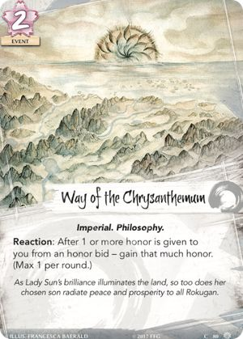

If Waning Hostilities was played this phase, Breakthrough cannot be played.
Waning Hostilities does not make players pass the second conflict opportunity, so Intimidating Hida and Hida Amoro) do not trigger.
Waning Hostilities hard-sets the number of conflicts available to each player to 1, overriding any effects that allow initiating additional conflicts (e.g. Hisu Mori Toride).
After Waning Hostilities is played, abilities that would increase the number of available conflicts cannot be initiated, because their effects have no potential to change the game state.
You cannot move a character to a conflict if that character cannot participate in that conflict (has a dash (–) for a skill, or a relevant constant ability, e.g. Shiba Peacemaker, Pacifism).


Radiant Orator and Sanpuku Seido do not take The Imperial Palace into account.


Once the new ring becomes the contested ring, the attacking player takes all fate on it.


- 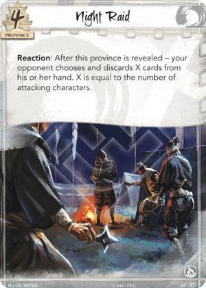

Pilgrimage cancels *all* ring effects, including those initiated by card effects (e.g. Display of Power, Akodo Toturi, Doji Hotaru, Guardian Kami, Kami Unleashed).
Changing the conflict type does not affect what other conflicts the attacker can declare. What matters is which conflict type was originally declared.
When the conflict type is switched, any characters that cannot participate in the conflict of the new type (have a dash (–) for a skill, or have Pacifism attached) immediately go home bowed.

Shameful Display can only be triggered if there are at least 2 eligible targets (participating characters that can each be either honored or dishonored; eligibility is assessed individually).
When you resolve the ability of Shameful Display, you need to change the game state in some way, but you do not need to successfully resolve both parts of the effect. For example, you can honor one character and fail to dishonor an already dishonored character, or vice versa.

Blood of Onnotangu prevents players from paying the fate cost of cards, placing additional fate on characters, or spending fate as instructed by card abilities (including spending fate "to rings").Players can still "give" and "take" fate to/from each other (e.g. via Doji Gift Giver, Meddling Mediator).

- 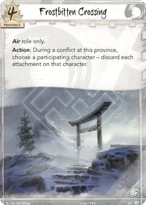

- 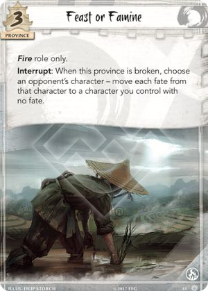
Feast or Famine moves *all* fate from one character to another.
Feast or Famine can only be triggered if you have a character with no fate (someone to move fate to)."

The honor token comes from the general token pool. It does not count towards honor victory.


- 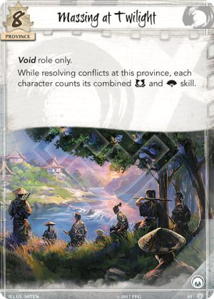
While at Massing at Twilight, any skill counts (e.g. Kakita Asami, Crisis Breaker) count both military and political skill.

Along the River of Gold cannot switch base skills on a character that has a dash (–) for a skill (dash values cannot be modified or changed).
If Along the River of Gold is turned faceup, you can trigger its ability during a conflict at another Water province. If it is facedown, you cannot voluntarily turn it faceup - provinces only turn faceup when they are attacked.
If Endless Plains is broken via its ability, Along the River of Gold can still be triggered. Broken provinces retain their elemental affiliation, it's not a part of their text.
- 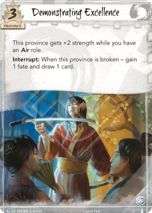


Support of the Phoenix can only be used on its own, it cannot be used along a Keeper/Seeker role.
- - Future Card Spoilers -


Set modifiers override all non-set modifiers (+/- and doubling/halving), even those applied afterwards.
- 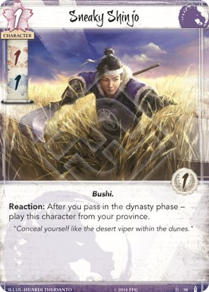
Sneaky Shinjo's ability says "play" (not "put into play"), so when you use it, you need to pay for him, and you can add fate to him.

If an opponent's ability instructs a player to *choose* a target, the character affected by Spreading the Darkness cannot be chosen. This also applies to abilities that instruct another player to choose targets (e.g. Court Games)).
Spreading the Darkness does not prevent the affected character from being sacrificed for Way of the Crab (that event doesn't instruct a player to *choose* a character, so it's non-targeting).If Feral Ningyo's ability is canceled by Hide Kisada, you can use it again.
Cards in hidden game areas (e.g. in hand) have no card memory, so Limits do not apply to them.
If Master Alchemist is used while the Fire ring is contested or claimed, fate stays on the ring until it returns to the unclaimed pool and then becomes contested again. Fate is only taken when the ring transitions to the contested state.

Set modifiers override all non-set modifiers (+/- and doubling/halving), even those applied afterwards.


- 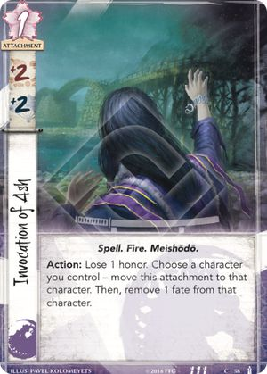
Ikebana Artisan can be triggered even if you have no fate.

Volcanic Troll gets the bonus while the Fire ring is in the unclaimed pool. Contested and unclaimed are different states.

When Master of Swift Waves swiches characters, a character in your home is considered to move to a conflict, so Spyglass and Ide Trader can trigger.

Menacing Iron Warrior's ability applies a lasting effect to a set of characters that meet the specified criteria (participating, lower military skill) at the moment the ability resolves. The lasting effect persists on affected characters until it expires at the end of the conflict, even if Menacing Iron Warrior leaves the conflict before that.

If the initial honor is redirected by Young Rumormonger, the post-Then effect does not resolve.


- 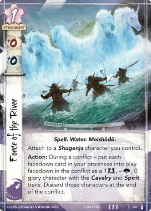


If the initial dishonor is redirected by Young Rumormonger, the post-Then effect does not resolve.
- 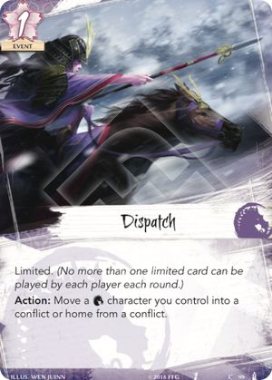


Mantis Tenkinja can let you play an event card that costs 1 when you have 0 fate.


Unleash the Djinn only affects characters that are already participating in the conflict. Any characters that enter the conflict after the ability has resolved are not affected.
Set modifiers override all non-set modifiers (+/- and doubling/halving), even those applied afterwards.


Infiltrator cannot be used to play Reaction or Interrupt events.


"Discard if military skill is 0" is a part of the lasting effect that applies until the end of the conflict. If Aramoro's ability doesn't lower the character down to 0 skill immediately, but a subsequent effect during the same conflict does, the character will be discarded.
If a replacement effect is used to prevent the character from leaving play (e.g. Reprieve, Stand Your Ground) but does not concurrently increase its military skill above 0, Aramoro's effect will immediately reapply, and the character will be discarded again.
If Bayushi Aramoro leaves the conflict after using his ability, the lasting effect will persist regardless.
Stolen Breath can be played during the action window before a conflict (between steps 3.1 and 3.2), or during action windows in Draw, Fate, or Regroup phases.
If attached character somehow ends up participating in a political conflict, it immediately goes home bowed.

Duty cancels the resolution of any effect that makes you lose honor. It cannot cancel costs though (e.g. Assassination).
- If you play Duty to cancel honor loss from Backhanded Compliment, you still get to draw a card.
- If you play Duty to cancel honor loss from resolving Banzai! twice, he second resolution is prevented.
- If you play Duty to cancel honor transfer (from an honor bid, the Air ring effect, or Levy), both honor loss and honor gain are prevented.
- If you play Duty to cancel honor loss from running out of cards, you place it in the discard pile first, then shuffle and draw a card / refill a province.
search, then select one or more clans


See all Expansions & Spoilers
- Core Set
Oct 2017. - Clan Packs
- Phoenix: Disciples of the Void
Apr 2018 - Scorpion: Underhand of the Emperor
Not yet released - Imperial Cycle
- Tears of Amaterasu
Nov 2017 - For Honor and Glory
Nov 2017 - Into the Forbidden City
Nov 2017 - The Chrysanthemum Throne
Nov 2017 - Fate has no Secrets
Dec 2017 - Meditations on the Ephemeral
Dec 2017 - Elemental Cycle
- Breath of the Kami
Jun 2018 - Tainted Lands
Not yet released - The Fires Within
Not yet released - The Ebb and Flow
Not yet released - All and Nothing
Not yet released - Elements Unbound
Not yet released
- Winter Court 2017 Clan Roles
-
Crab: Keeper of Earth
Crane: Seeker of Air
Dragon: Seeker of Fire
Lion: Keeper of Fire
Phoenix: Keeper of Water
Scorpion: Seeker of Void
Unicorn: Keeper of Void
- Restricted List
-
When deckbuilding, a player may select one card from the restricted list to include in their decks, and cannot include any other restricted cards in their decks and set of provinces.
A player may run as many copies of his or her chosen restricted card in a deck as the regular game rules (or card text) allow.Mirumoto’s Fury (Core Set, 159)
For Greater Glory (Core Set, 168)
Against the Waves (Core Set, 177)
Forged Edict (Core Set, 184)
Charge! (Core Set, 210)
Pathfinder’s Blade (Imperial Cycle, 31)
Policy Debate (Imperial Cycle, 40)
Iron Mine (Imperial Cycle, 103) - Keywords
Ancestral is a keyword ability that appears on attachments. If the card or game element to which an ancestral attachment is attached leaves play, the ancestral attachment is returned to its owner's hand instead of being discarded.
Courtesy is a keyword ability. When a card with the courtesy keyword leaves play, its controller gains 1 fate.
Covert is a keyword ability. When a player initiates a conflict, for each character with the covert keyword he or she declares as an attacker, that player may choose one character without covert controlled by the defending player. Each chosen character is considered evaded by covert, and cannot be declared as a defender for that conflict.
Card abilities may be used to move Characters that have been evaded by covert into a conflict as defenders.
Covert may only be used when Characters are declared as attackers. If a character with covert is moved into or played into a conflict after the point at which the conflict was declared, that character's covert ability does not resolve.Limited is a keyword ability. No more than one card in total with the limited keyword can be played by each player each round.
Cards played from hand and played from a player's provinces are restricted by and count toward this limit.
Limited cards that are "put into play" via card abilities ignore and are ignored by this restriction.No attachments is a keyword ability. A card with this keyword cannot have an attachment card attached.
If one or more traits precedes the word “attachments” (for example, "No Weapon or Armor attachments"), the card cannot have an attachment that possess one or more of the specified traits, but it can have attachments possessing none of those traits.
If the word "attachments" is followed by the word “except” and one or more traits (for example, "No attachments except Weapon"), the card can have attachments that possess one or more of the specified traits, but it cannot have attachments possessing none of those traits.
If a card has multiple variants of the “No attachments” keyword, any variant that would prevent a card from having a given attachment prevails.Pride is a keyword ability. After a character with the pride keyword wins a conflict, honor that character. After a character with the pride keyword loses a conflict, dishonor that character.
Restricted is a keyword ability. A character may not have more than two attachments with the restricted keyword attached to it at any time.
If at any time a character has three or more restricted attachments, that character's controller must immediately choose and discard one of the restricted attachments on the character as soon as the illegal game state occurs.Sincerity is a keyword ability. When a card with the sincerity keyword leaves play, its controller draws 1 card.
- Gameplay Phases
-
I. Dynasty Phase
1.1 Dynasty phase begins.
1.2 Reveal facedown dynasty cards.
1.3 Collect fate.
1.4 SPECIAL ACTION WINDOW
Players alternate playing cards from provinces and/or triggering Action abilities.1.5 Dynasty phase ends.
II. Draw Phase
2.1 Draw phase begins.
2.2 Honor bid.
2.3 Reveal honor dials.
2.4 Transfer honor.
2.5 Draw cards.
ACTION WINDOW
2.6 Draw phase ends.
III. Conflict Phase
3.1 Conflict phase begins.
ACTION WINDOW
NOTE: After this action window, if no conflict opportunities remain, proceed to (3.4).3.2 Next player in player order declares a conflict (go to Conflict Resolution), or passes (go to (3.3).
3.3 Conflict Ends/ Conflict was passed. Return to the action window following step (3.1).
3.4 Determine Imperial Favor.
3.4.1 Glory Count.
3.4.2 Claim Imperial Favor.
3.5 Conflict phase ends.
Proceed to Fate Phase
Conflict Resolution
3.2 Declare conflict.
3.2.1 Declare defenders.
3.2.2 CONFLICT ACTION WINDOW
(Defender has first opportunity)3.2.3 Compare skill values.
3.2.4 Apply unopposed.
3.2.5 Break province.
3.2.6 Resolve ring effects.
3.2.7 Claim ring.
3.2.8 Return home. Go to (3.3).
IV. Fate Phase
4.1 Fate phase begins.
4.2 Discard characters with no fate.
4.3 Remove fate from characters.
4.4 Place fate on unclaimed rings.
ACTION WINDOW
4.5 Fate phase ends.
V. Regroup Phase
5.1 Regroup phase begins.
ACTION WINDOW
5.2 Ready cards.
5.3 Discard from provinces.
5.4 Return rings.
5.5 Pass first player token.
5.6 Regroup phase ends.
Proceed to Dynasty Phase
- Duel Timing
-
D.1 Duel Begins.
D.2 Establish challenger and chalengee.
D.3 Duel honor bid.
D.4 Reveal honor dials.
D.5 Transfer honor.
D.6 Modify dueling skill.
D.7 Compare skill value and determine results.
D.8 Apply duel results.
D.9 Duel ends.
- Advanced Search Techniques
You can search for "Characters', "events", "attachments", "holdings", "provinces", "strongholds" or "roles". Card numbers, names, clans, decks, traits, keywords, elements, packs, and influence costs.
The search will return all instances of the search term. Which means that the more you type, the more refined the search will be. But also that you usually only need to type the first few letters of your search to get relevent results.
For advanced searches, add the following Characters before your search term.
"d." to search for deck types. Example "d.conflict", or just "d.c". Options are Conflict, Dynasty, Province, Role, Stronghold.
"e." to search for element types. Example "e.void", or just "e.v". Options are Air, Earth, Fire, Void, Water.
"i." will search for all cards who can be bought with influence, or "i'3", will search for cards with an influence cost of 3.
"k." to search for keywords. Example "k.covert". Or just type "k." for a full list of Characters with keywords.
"o." to search for card with requirements. Example "o.shugenja" to find cards that can be played Only on Shugenja, or Only if you control a Shugenja. Also o.Keeper , Seeker, Bushi, Monk, Favor, Bid, Honorable etc.
"t." to search for traits. Example "t.bushi".- About This App
The information presented in this app about Legend of the Five Rings the Living Card Game, both literal and graphical, is copyrighted by Fantasy Flight Games. This app is not produced, endorsed, supported, or affiliated with Fantasy Flight Games.
The information, text and images displayed in this app were collected from a variety of sources across the internet.
Special mention goes to the amazing fiveringsdb.com who generously allow me to use the card rulings that they put together, and for their clan icon fonts.
And to Cardgamedb.com, the L5R subreddit & Facebook groups, and of course to FFG themselves.
If you like this app, and you play the Game of Thrones LCG, check out A Deck of Thrones, on Android & IOS.
Special thanks to my beta testers: Ninefingers, mcphee, Mudskipper, Kat, Skippy, Pumpkin & Butterbeer.